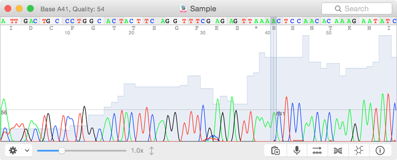

4Peaks main window after loading a sequence file.
- 4Peaks is able to load all frequently used DNA sequencing file formats, including ABI, SCF, ZTR1/2/3 and BIO.
- Saving your data is possible in the same formats except ABI (the ABI format is proprietary format of ABI sequencing machines).
- The main window supplies you with traces, sequence, quality data (when added to your sequence data) and translation information and the options for searching and zooming.
- You are able to edit your sequence data by selecting the specific base and then double click on it. Once selected, you are able to edit, insert and delete bases.
- For sequences obtained with reverse primers, use the reverse complement option in the edit menu.
- To BLAST your obtained sequence against the NCBI database, choose the BLAST option in the edit menu. Your sequence will
either be copied to the clipboard (Blast 2 sequences), or pasted into the sequence field of the BLAST against a selected genome (e.g. MegaBLAST).
- Preferences can be set for Data, Traces, Translation, BLAST, Speech, Motifs and Plugins. You find the preferences in the 4Peaks menu.
- The build in speech option will read out your obtained sequences so you can easilly compare it with the template sequence.
- You can open the drawer to get your sequence or translation in text format. The drawer can also provide all information about the sequence run.